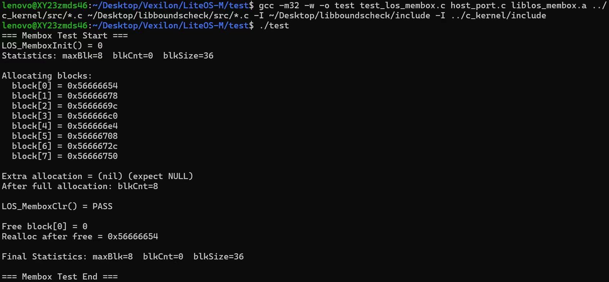
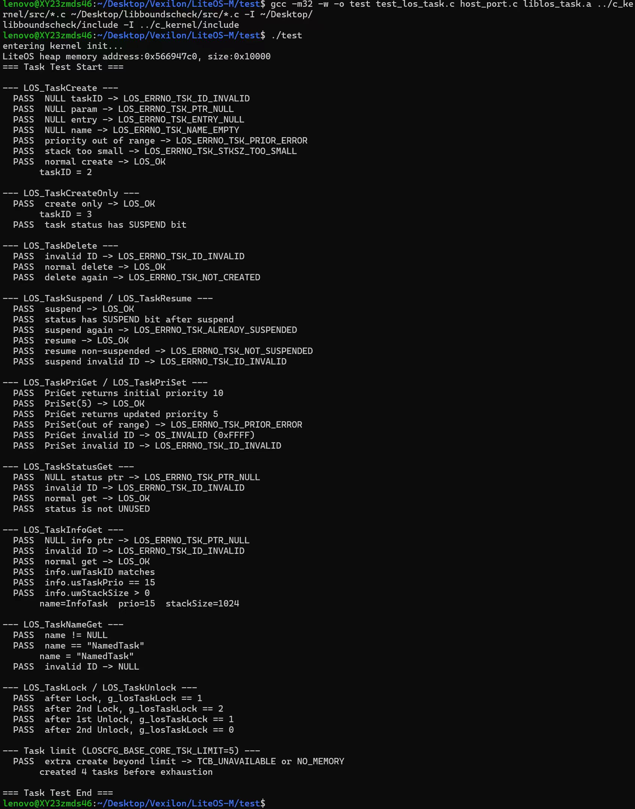
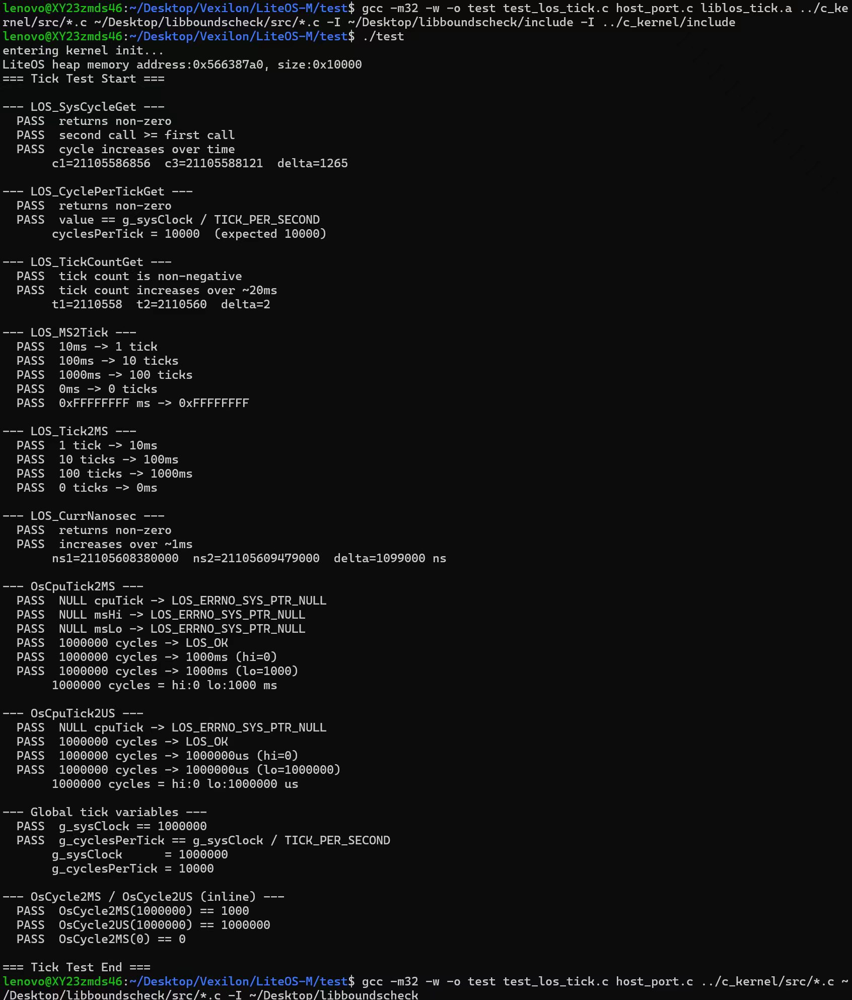
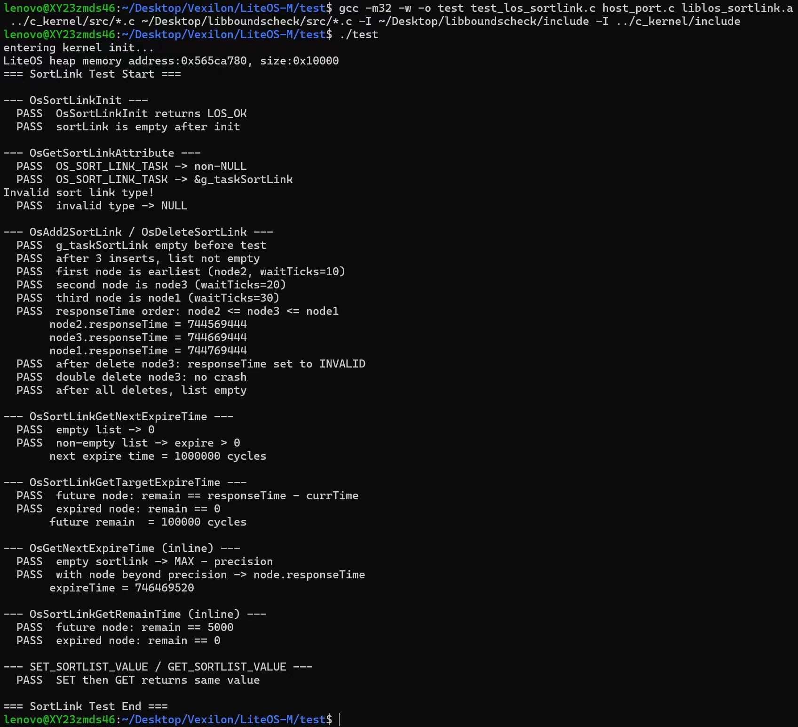
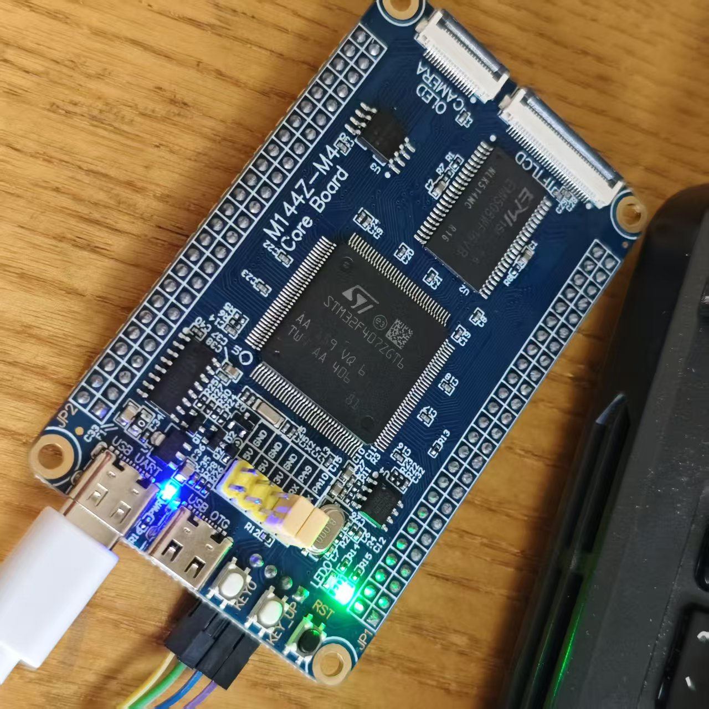
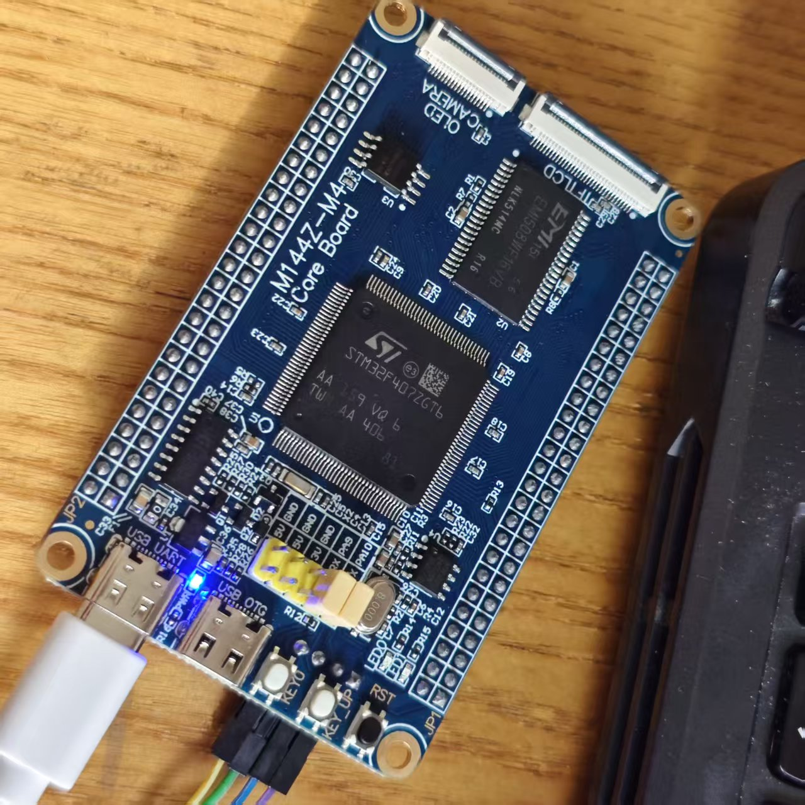
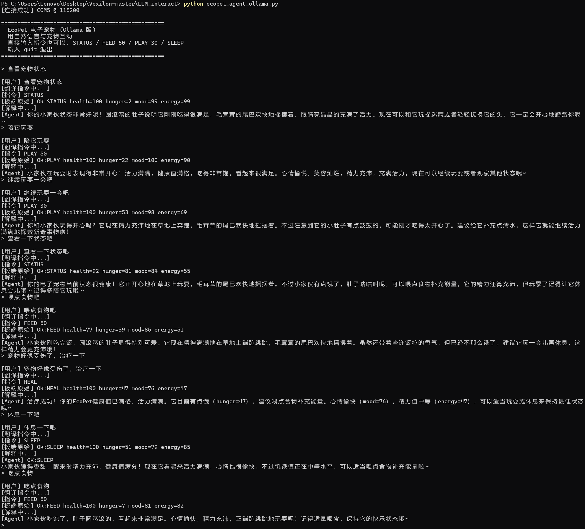

Vexilon
Rust × OpenHarmony LiteOS-M × STM32F407 × EcoPet Agent
面向嵌入式 RTOS 的安全迭代实验：从 C 内核关键路径 Rust 化，到 STM32F407 真机上板，再到基于固定串口协议的自然语言交互 Demo。
项目背景：在资源受限 RTOS 中引入可检查的安全边界
LiteOS-M 原生内核主要由 C 语言实现，拥有轻量、实时、可裁剪等优势；但任务、调度、队列、内存块等关键路径也天然面临裸指针、手动资源管理和弱类型接口带来的工程风险。
传统 C 语言 RTOS 内核痛点
- 裸指针和手动内存管理可能引发越界访问、空指针、悬挂指针、重复释放等问题。
- 多任务调度、队列通信与状态转移依赖人工维护，异常路径和竞争窗口更难审计。
- 用户输入到内核操作缺少统一参数边界与强类型约束，非法参数容易扩散到内部状态。
Rust 的工程价值
- 所有权、生命周期、Option/Result 和强类型系统，让空值、错误与状态转移更显式。
- no_std + alloc 生态适合无操作系统、低资源约束的嵌入式场景。
- 项目目标不是一次性重写完整内核，而是选择关键模块做渐进式、安全可验证的工程探索。
两条主线任务：内核重构与上板验证同步收敛
A. LiteOS-M 多模块 Rust 化重构
Kernel Track围绕调度、计时、任务管理和基础内存结构，继续推进往届单一内存模块 Rust 改写后的多模块探索。
- 技术路径：Rust no_std + alloc、#[repr(C)]、#[no_mangle]、bindgen/cbindgen、静态库链接。
- 核心目标：保持 C ABI 兼容，降低裸指针和边界错误风险，提高接口可检查性。
- 表达边界：降低风险、增强可检查性、改善维护性，并以现有测试覆盖范围作为评估边界。
B. EcoPet 真机验证 + 自然语言 Agent
Board TrackEcoPet 是项目的上板验证场景，用于将任务、队列、串口、时钟、GPIO 和 Agent 交互串成可观察闭环。
- 硬件：正点原子 ALIENTEK M144Z-M4 最小系统板，STM32F407ZGT6。
- 通信：USART1，115200 波特率，PC 与开发板通过固定串口协议交互。
- 交互：Python Agent + Ollama + qwen3:8b，负责自然语言翻译、响应解释与告警展示。
- 验证：LiteOS-M 任务、队列通信、串口中断、状态机、LED 状态反馈。
测试与验证：模块、FFI、真机三层闭环
验证覆盖模块功能、C/Rust FFI 边界与 STM32F407 真机链路，重点关注功能等价、错误路径可观察性和上板运行稳定性。
模块测试
覆盖基础功能、边界参数、重复操作、空参数、非法任务状态等场景，确认重构模块在当前用例下保持行为兼容并返回明确错误。
C/Rust FFI 测试
检查结构体布局、符号导出、参数传递与 ABI 兼容，减少跨语言调用中的字段偏移、签名不一致与链接风险。
真机联动测试
验证 USART1 输入、三任务运行、队列通信、状态衰减、LED 显示和 Agent 解释，形成可观察的板端运行链路。
Rust 重构模块展示：五个关键模块的渐进式替换路径
每个模块都保留与 C 侧可协作的接口语义，重点增加参数检查、状态封装和测试覆盖。
los_sortlink
有序链表，为延时队列、定时器队列等提供基础数据结构。Rust 封装节点操作，降低重复挂载、断链和空指针访问风险。
los_tick
系统节拍，为任务延时、超时判断和调度时序提供基础时间基准。重点整理计数、换算和边界值处理。
los_membox
固定块内存管理，面向小块内存分配。集中检查非法地址、重复释放、跨池释放和边界问题。
los_task
任务创建、挂起、恢复、删除和优先级维护。通过状态转换封装和参数校验改善任务控制路径可维护性。
los_sched
就绪队列、优先级选择和任务切换触发。与有序链表协作验证调度状态更新和优先级筛选路径。
硬件平台：STM32F407ZGT6 上的 LiteOS-M 验证环境
开发板信息
正点原子 ALIENTEK M144Z-M4 最小系统板，搭载 STM32F407ZGT6。
适配说明
- 工程目录沿用
stm32f429ig_firechallenger历史命名。 - 最终链接脚本、栈顶地址和时钟配置按 STM32F407 适配。
- 系统时钟：HSI 16MHz → PLL → 84MHz。
- 上板 Demo 使用 USART1、PF9/PF10 LED 和 LiteOS-M 任务/队列。
IronClaw 方案调整：从完整沙箱设想到固件固定协议边界
早期设想未作为最终成果落地
- 上游依赖和维护状态不稳定，在本地/WSL 环境中难以稳定构建。
- 完整 Agent 运行时和 WASM 沙箱对 STM32F407 这类资源受限平台不友好。
- 课程项目最终目标收敛为验证 LiteOS-M 重构模块、任务调度、队列通信和串口交互链路。
最终替代方案
- 板端固件负责可信边界：ParseCommand、参数范围校验、clamp 到 [0,100]、错误码反馈。
- PC 端 Ollama + Qwen3 Agent 只负责自然语言翻译、响应解释和低值告警展示。
- 大模型不直接修改内核状态，不绕过固件协议；所有状态变化仍由 LiteOS-M 固件执行。
系统架构：固定协议约束 Agent 输出，LiteOS-M 内核层承载任务链路
大模型不直接修改内核状态；自然语言先被翻译成有限串口指令，最终合法性判断和状态更新由板端固件完成。
EcoPet Demo 专区：用电子宠物验证任务、队列、串口、时钟与 GPIO 联动
EcoPet 是项目上板验证的一部分，不是全部项目。它运行在 STM32F407 + LiteOS-M 上，把内核能力组织成一个可演示、可调试的嵌入式应用闭环。
状态参数与初始值
初始状态为 health=100, hunger=0, mood=100, energy=100，所有状态均通过 clamp
限制在 [0,100]。
UartRxTask
从 USART1 中断写入的环形缓冲区读取字符，按行解析命令，并将合法命令写入 LiteOS-M 队列。
PetStateTask
从队列读取命令，执行状态机逻辑，并通过串口输出 OK、WARN 或 ERR。
TelemetryTask
每秒运行一次，累计 10 秒后执行被动状态衰减，并持续输出低值告警。
指令与状态变化
| 指令 | 状态变化与返回 | 异常/保护 |
|---|---|---|
STATUS |
查询状态，返回 OK:STATUS health=... hunger=... mood=... energy=... |
无参数 |
FEED <1-100> |
正常喂食：hunger -= param，mood += 5，返回 OK:FEED |
若 hunger < 20 且 param > 50，触发
WARN:OVERFED，health -= 15，mood -= 10，hunger -= param/2
|
PLAY <1-100> |
随机 moodGain、energyCost、hungerGain，均在 [0,30]；正常情况下 mood += moodGain，energy -= energyCost，hunger += hungerGain | 20% 概率 WARN:INJURED；energy < 20 时 WARN:OVERTIRED；预测会死亡则 ERR:PLAY_FATAL |
SLEEP |
energy += 40，health += 15，mood += 5，返回 OK:SLEEP |
状态仍被 clamp 到 [0,100] |
HEAL |
health += 30，mood -= 5，返回 OK:HEAL |
用于健康较低时恢复状态 |
| 非法命令 / 参数越界 / 队列满 | ERR:INVALID_CMD、ERR:INVALID_ARG、ERR:QUEUE_FULL |
固件侧直接拒绝，不进入状态机更新 |
被动变化与低值告警
- 每 10 秒 hunger += 2，energy -= 1，mood -= 1。
- hunger > 80 时 health -= 3，hunger > 70 时 health -= 1。
- energy < 10 时 health -= 2；mood < 20 时 health -= 1。
- health <= 10：WARN:LOW_HEALTH；hunger>= 90：WARN:HIGH_HUNGER。
- mood <= 10：WARN:LOW_MOOD；energy <=10：WARN:LOW_ENERGY。
LED 状态反馈
- PF9 绿色 LED：mood > 50 时点亮，表示宠物心情较好。
- PF10 红色 LED：hunger > 60 或 health < 50 或 energy < 20 时点亮，表示宠物需要关注。
- LED 在命令处理后和 TelemetryTask 周期检查时刷新。
实机演示区：终端风格展示自然语言到板端指令的闭环
终端窗口展示从自然语言输入、Agent 翻译、串口指令、板端响应到自然语言解释的完整流程。
项目总结与核心成果
本项目在往届单一模块 Rust 改写的基础上，完成了更大范围的 LiteOS-M Rust 化探索，并补充了 STM32F407 上板 Demo 与自然语言交互工具。最终成果覆盖内核模块重构、混合编译、真机验证和 Agent 辅助交互四个层面。
扩展 Rust 重构范围
在往届 los_memory.c 改写基础上，完成 los_sortlink、los_tick、los_membox、los_task、los_sched 五个模块的 Rust 化实现与接口适配。
完善 C/Rust 混合编译路径
通过 bindgen、cbindgen、#[repr(C)]、#[no_mangle] 和静态库链接方式，整理出 LiteOS-M 中 C/Rust 模块协同工作的基本流程。
完成 EcoPet 上板 Demo
在 STM32F407 上实现三任务架构、串口环形缓冲、LiteOS-M 队列、状态机、被动衰减和 LED 指示，验证重构模块能够支撑小型嵌入式应用。
完成 IronClaw 方案迭代说明
项目未继续使用 IronClaw，而是采用“固件侧固定协议与参数校验 + PC 端 Ollama/Qwen3 交互”的方案，更符合现有硬件资源和课程周期。
实现 PC 端自然语言 Agent
ecopet_agent_ollama.py
支持自然语言转指令、板端响应解释、后台告警监听和直接指令透传，提高演示和调试效率。
沉淀可复用路径
形成模块选择、接口绑定、混合编译、单元测试和上板验证经验，为后续 LiteOS-M Rust 化实验提供参考。
问题反思与解决方案
问题 1多模块耦合导致混合编译和链接复杂
多个 Rust 模块同时替换时，容易遇到符号命名、结构体布局和链接顺序问题。项目采用分模块编译、逐步替换、统一导出接口的方式降低风险。
问题 2no_std 环境下可用工具有限
嵌入式环境不能直接依赖标准库，部分数据结构、错误处理和内存分配逻辑需要重新适配。项目通过 alloc、轻量封装和保留必要 C 侧能力完成基础适配。
问题 3IronClaw 未能落地
IronClaw 的依赖和资源要求与项目周期、硬件平台不匹配。最终将安全边界放在固件协议层，把大模型限制为交互辅助组件，保证 Demo 可以稳定完成验证。
问题 4真机压力测试仍不充分
当前上板验证以功能联动为主，尚未覆盖长时间运行、高频串口输入、极端任务负载和异常断连等场景。后续需要补充自动化压力测试与日志分析。
问题 5AI Agent 仍偏演示工具
当前脚本默认串口和模型名固定，异常恢复能力有限。后续可以加入端口扫描、配置文件、重连机制和更明确的日志记录，使其更适合复现实验和现场展示。
未来展望
01继续推进剩余内核模块 Rust 化
后续可尝试 IPC、信号量、互斥锁、软件定时器等模块，逐步扩大 Rust 覆盖范围。
02补充更系统的真机压力测试
加入长时间连续运行、高频串口命令、队列满载、低内存场景和异常输入测试。
03完善轻量级安全接口层
在不依赖 IronClaw 的前提下，基于 EcoPet 中已经实现的固定协议、参数校验和状态钳位，设计更通用的用户态到内核态调用约束。
04优化 Agent 工具链
加入配置文件、串口自动发现、日志保存、重连机制和模型降级策略，使其更适合现场演示和实验复现。
05量化性能与资源开销
进一步测量 Rust 模块对代码体积、RAM 占用、调度延迟和串口响应时间的影响，为后续优化提供数据依据。
项目进度与团队贡献
本区内容来自 README.md。项目进度转换为时间线展示；贡献一览完整保留成员姓名、贡献描述与参考百分比贡献率。
选题探索
组内成员线下开展研讨会分析往年小组选题，提出 1. 增强型 LLM 嵌入文件系统、2. Rust 改写系统内核、3. 网络协议栈改写等多种选择
选题探索
组内成员锁定Rust重写项目并对重写哪种具体系统开展探索
项目调研
通过比较多种选择，并与老师和助教进行线上讨论后，最终选定 LiteOS-M
路线收敛
与老师进行线下研讨，阶段性确定“LiteOS-M 核心模块接力重构 + IronClaw 接口层”方向，并进入接口层方案验证
报告撰写
开展项目仓库主页README、调研报告、可行性报告、项目介绍ppt的写作任务并在过程中不断修正错误、加深对任务理解
报告改进
经过课上老师对本小组工作的点评，新增选择开发板并实际上板验证工作，本周完成此任务的多报告内容补充
项目第一阶段
完成 rust 化 los_membox.c (10KB)、los_task.c (50KB)、los_tick.c (15KB)、los_sortlink.c (6KB)、los_sched.c (19KB) 模块，并搭建测试集，完成编译检验
项目第二阶段
学习 STM32 开发板，编译并烧写 LiteOS-M 与 EcoPet 代码，完成 PC 端 Agent 部署和闭环测试
项目收尾
完成 final_report 和结题 PPT，并进行汇报预演
贡献一览
陈安达
27%- 提供选题意见并最终被敲定
- 持续更新 README
- 完善可行性和调研报告
- 改写 36KB LiteOS 代码
- 给出 Lab4 分工，完成 Lab4 的 llama.cpp 主线任务
- 完成 2 次汇报提问（中期）
- 参与 EcoPet 代码和烧写任务
- 完善结题报告
- 准备结题 PPT 并上台做结题报告
付锦鹏
23%- 提供选题意见
- 编写可行性报告
- 给出 Rust 改写分工
- 买入开发板
- 编译并验证Rust改写正确
- 参与Ecopet Agent代码和烧写任务
- 编写结题报告并上台做结题报告
李俊谕
23%- 提供选题意见
- 编写调研报告
- 改写 50KB LiteOS 代码
- 完成 Lab4 的 Ray 必做和选做任务
- 学习 STM32 开发板使用并参与 EcoPet 代码和烧写任务
- 完成 5 次汇报提问（中期）
- 完成 2 次汇报提问（结题）
邱义家
22%- 提供选题意见
- 完成中期答辩 PPT（使用）并上台做中期汇报
- 改写 50KB LiteOS 代码
- 完成 Lab4 的 Ray 必做和选做任务
- 学习 STM32 开发板使用并参与 EcoPet 代码和烧写任务
- 完成 2 次汇报提问（结题）
杨邵恺
5%- 完成中期答辩 PPT（未使用）
- 参与编写部分测试代码
- 完成 3 次汇报提问（结题）
文件结构与课程信息
团队与课程信息
小组名称：Vexilon
成员：付锦鹏、杨邵恺、陈安达、邱义家、李俊谕
课程：OSH-2026 操作系统课程设计
单位：中国科学技术大学 · 2026 春季学期
指导老师：邢凯
文件结构说明
Rust改写正确性验证




EcoPet 上板实机结果佐证
以下图片仅作为实验结果留证：开发板通电运行、LED 指示状态，以及 PC 端 Ollama Agent 与板端 EcoPet 的串口交互截图。


